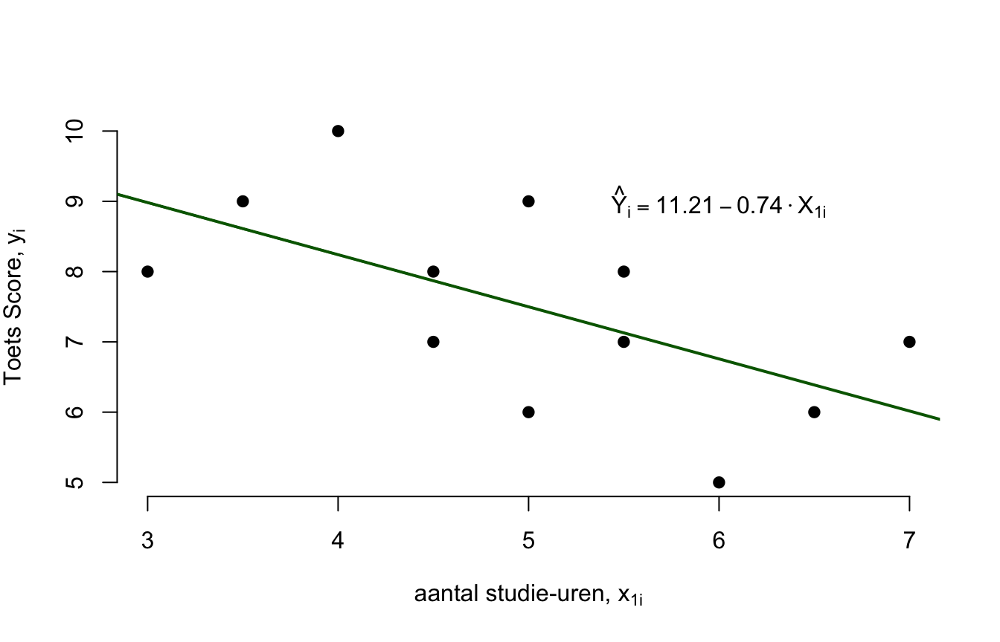
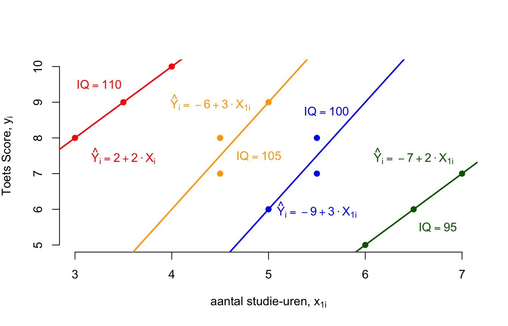

6 Hoofdstuk 6 - Meervoudige Lineaire Regressie-Analyse.
In hoofdstuk \(3\) hebben we gekeken naar de relatie (verband, correlatie, covariatie, associatie, samenhang) tussen twee variabelen, hierbij maakte we geen onderscheid in voorspelrichting. Hoofdstuk \(5\) heeft dit onderscheid wel: dus één onafhankelijke variabele (de predictor \(x\)) en de afhankelijke variabele (de uitkomst of het criterium, \(y\)). Dit extra onderscheid in voorspelrichting heb je dus niet bij een ‘simpele’ Pearson correlatie tussen twee (interval) variabelen zoals in hoofdstuk \(3\). Sterker nog, in hoofdstuk \(5\), hebben we gekeken hoe je de afhankelijke variabele (\(Y\)) kan voorspellen op basis van de onafhankelijke variabele aan de hand van een enkelvoudige regressievergelijking: \(\hat{y}_i = b_0 + b_1 \cdot x_i\). De slope (\(b_1\)) speelt hierbij de belangrijkste rol, omdat de waarde van de slope je precies vertelt hoeveel punten (éénheden) de afhankelijke variabele ‘verandert’ voor elke toename (of afname) van één éénheid voor de predictor. Bedenk nog even dat bij onze aapjes, \(1\) jaar verschil in leeftijd (\(X\)) overeenkomt met \(40\) cm verschil in lengte (\(Y\)) vanwege \(b_1 = 40\). Op zich best flauw, want als de correlatie tussen twee variabelen positief is, zal de slope, dus bij een enkelvoudige regressie, ook positief zijn. Altijd, altijd en altijd. Vaak vinden we het dus al genoeg om te weten hoe sterk de relatie is in termen van ‘gewoon’ de (Pearson) correlatie (\(r_{xy}\)) en doet de slope er dus eigenlijk niet toe. En als je de correlatie (\(r_{xy}\)) kwadrateert, weet je ook welk gedeelte (proportie) of hoeveel procent, van de totale variatie de variabelen van elkaar kunnen verklaren (de Variance Accounted For, VAF). Waarom hebben we dan enkelvoudige regressie analyses uitgevoerd in hoofdstuk \(5\)? Puur als opbouw en basis voor dit hoofdstuk.
Aangezien onze wereld uit meer dan slechts twee variabelen bestaat en er natuurlijk velen mogelijke andere predictoren (verklaarders) bestaan voor de voorspelling van een afhankelijke variabele, willen we juist weten welke combinatie van predictoren de afhankelijke variabele zo goed mogelijk voorspelt. Daarom dus juist een (Lineaire) Multipele Regressie Analyse (MRA) en eigenlijk begint onze wereld hier pas, hier worden wij als statistici pas warm van (Ja ja)!
Correctie voor Spurieuze Verbanden
De heer Wilders is geen statisticus (zoals zoveel politici) en hij denkt dan ook behoorlijk enkelvoudig en baseert zijn conclusies dus ook enkel en alleen op simpele verbanden (het verband tussen slechts twee variabelen). Zijn gedachtegang is bijvoorbeeld dat (verschil in) etniciteit (\(x\)) de oorzaak is aan van het al dan niet vertonen van crimineel gedrag (\(y\)) en hij veronderstelt dus een causaal (oorzakelijk) verband: het één veroorzaakt het ander. Ik ben het met hem eens dat er een relatie is tussen deze twee variabelen, Ik geloof heus wel dat Marokkaanse jongeren vaker crimineel zijn dan Hollandse jongeren, maar is dit het hele verhaal? Natuurlijk niet, de heer Wilders vergeet in zijn betoog te kijken naar andere variabelen die de criminaliteit veel beter (misschen wel echt op een oorzakelijke manier) verklaren. Sterker nog, als je ‘corrigeert’ (leg ik zo uit) voor andere variabelen, zoals sociaal economische status (SES) of opleidingsniveau, zal het effect van etniciteit (op crimineel gedrag) geheel verdwijnen. Het probleem is dat Marokkaanse jongeren vaak opgroeien in gezinnen met een behoorlijk lage SES (laag inkomen en/of laag opleidingsniveau). Het feit dat deze jongeren dus vaak relatief arm zijn, is misschien wel de daadwerkelijke rede dat deze jongeren crimineel gedrag vertonen, want ook de jongeren uit relatief arme Hollandse gezinnen, zijn meer geneigd tot criminaliteit. Het is dus waarschijnlijker dat armoede leidt tot (de veroorzaker is van) criminaliteit, en dus niet de afkomst van een persoon. Als je naar simpele verbanden kijkt, zul je vaak verbanden tegenkomen die eigenlijk ‘spurieus’ (schijn) zijn. Een correlatie tussen twee variabelen is spurieus als na correctie (of controle) voor een andere variabele er eigenlijk geen verband meer is tussen de eerste twee. Nou is Wilders ook wel een heel spurieuze verschijning, zou ik zo zeggen. Belangrijk voor nu is dat je onthoudt dat het juist de combinatie van meerdere predictoren is, waarmee je kan uitvogelen welke predictor (of combinatie van predictoren) ‘echt’ van belang zijn voor de voorspelling van een afhankelijke variabele. Je zal zien dat bij een multipele regressie, om criminalteit te voorspellen op basis van zowel etniciteit als SES, het alléén SES is die nog variatie zal verklaren! Dus als het om ‘meer of minder gaat’ zouden we dus van alle armen afmoeten, willen we criminaliteit voorkomen!
Veranderende of Omdraaiende verbanden
Stel je wilt zo goed mogelijk (variatie in) een variabele (\(y\)) verklaren en je hebt meerdere voorspellers (\(x_1\), \(x_2\), \(x_3\)…) tot je beschikking. Bijvoorbeeld een toets-cijfer op de basisschool als criterium (\(y\)) en je hebt gegevens over het aantal studie uren (\(x_1\)), en de intelligentie (\(x_2\)) van ieder kind. Stel dat je de data verzameld hebt en alleen kijkt naar de (simpele) correlatie (of enkelvoudige regressie) tussen het aantal studie-uren (\(x_1\)) en het toetscijfer (\(y\)). Wat denk je, een positief of negatief verband tussen de twee variabelen? Gek genoeg, zul je hoogst waarschijnlijk een negatief verband vinden, dus hoe langer iemand gestudeerd heeft, des te lager zal zijn toets-score zijn, gek hè? En toch is het zo. Ook niet heel gek, want wie zijn het die vaak het laagst scoren? De kinderen die het minst intelligent zijn en het zijn juist die kinderen die vaak langer moeten studeren (maar nog steeds een relatief laag cijfer halen). Tuurlijk als je alleen kijkt naar een groepje kinderen met dezelfde intelligentie, en als je binnen dat groepje de toetsscores vergelijkt tussen de kinderen die kort of juist lang hebben gestudeerd, dan zul je juist wel vinden dat het aantal studie-uren positief gerelateerd is aan de toets-score. Dus gewoon zoals je verwacht had misschien, hoe langer iemand studeert des te hoger zal zijn cijfer zijn. Maar zeker op een basisschool, zul je dus ook veel variatie in intelligentie hebben. Alleen bij specifieke groepen waarin kinderen een vergelijkbare intelligentie hebben (zoals bijvoorbeeld binnen een mavo, havo of vwo klas), zul je meteen een positief verband vinden tussen het aantal studie uren en de toets-score. Maar als je dus wel veel variatie hebt in intelligentie, is het dus van belang om deze variabele mee te nemen (als predictor) in je regressie-analyse, juist zodat je kunt achterhalen wat het effect is van het aantal studie uren binnen groepjes van kinderen met éénzelfde intelligentie. Dat doet een multipele regressie gewoon voor je! Deze analyse ‘kijkt’ telkens naar een groepje kinderen met eenzelfde waarde voor intelligentie en kijkt vervolgens wat het effect is van het aantal studie-uren op de toets-score binnen dat groepje. We zeggen dan ook wel dat we dan naar het effect van studie-uren (op de toets-score) kijken onder ‘constant-houding van’ of ‘gecontroleerd voor’ intelligentie (terwijl het gewoon de tweede predictor is in onze MRA).
Laten we dit laatste verhaal ook eens aan de hand van een paar plaatjes bekijken. Dus de basisschool situatie, waarin we drie variabelen meten: Toets-score (\(y\)), het aantal studie-uren (\(x_1\)) en IQ (\(x_2\)) waarbij we de volgende data-set tot onze beschikking hebben:
| \(i\) | \(y_i\) | \(x_{i1}\) | \(x_{i2}\) |
|---|---|---|---|
| 1 | 8 | 3.0 | 110 |
| 2 | 8 | 4.5 | 105 |
| 3 | 9 | 5.0 | 105 |
| 4 | 6 | 5.0 | 100 |
| 5 | 8 | 5.5 | 100 |
| 6 | 5 | 6.0 | 95 |
| 7 | 7 | 7.0 | 95 |
| 8 | 10 | 4.0 | 110 |
| 9 | 7 | 5.5 | 100 |
| 10 | 6 | 6.5 | 95 |
| 11 | 9 | 3.5 | 110 |
| 12 | 7 | 4.5 | 105 |
Laten we eerst kijken naar de voorspelling van de toets-score op basis van alleen het aantal studie-uren. We kijken dan dus aan de hand van een enkelvoudige regressie naar het simpele verband tussen deze twee variabelen:

Figuur 6.1: Een (ogenschijnlijk) negatief verband tussen het aantal studie-uur en toets-score
Je ziet dat de puntenwolk van linksboven naar rechts onder loopt, en dus een negatief verband weergeeft tussen het aantal studie-uren en de toets-score. En de regressielijn laat daarom ook een dalende trent zien met een slope (\(b_1\)) die negatief is (\(-0.74\)) en dus aangeeft dat voor elk studie-uur (één eenheid dus) dat er meer gestudeerd wordt er dus (gemiddeld gezien) \(0.74\) eenheid lager gescoord wordt op de toets. Maar dit is dus wel een heel ‘simpel’ verhaal, het ‘meervoudige’ verhaal luidt geheel anders.
In het volgende plaatje, hou ik ook rekening met de intelligentie van de leerlingen en heb de punten - per specifieke waarde van IQ - een kleur gegeven. Zo heb ik de leerlingen met de hoogste intelligentie (\(IQ = 110\)) rood gekleurd. In dit plaatje staat dus informatie over drie variabelen weergegeven:

Figuur 6.2: Een positief verband tussen tussen het aantal studie-uur en toets-score, na (met) correctie voor IQ
Als je naar één puntje (van een leerling) kijkt, zie je drie dingen:
Hoe links of rechts een puntje staat (het links-rechts gebeuren, of de variatie in horizontale richting, de \(x_1\) - as), dus de waarde op het aantal studie-uur, \(x_1\). Zo heeft het meest linker puntje (voor leerling \(i = 1\)) dus een waarde \(3\) op het aantal studie-uur.
De kleur van het puntje (het kleur-gebeuren, of de gebruikte kleurvariatie voor verschil in waarde voor \(x_2\)). Zo is het puntje voor leerling \(i = 1\) rood en staat dus voor een IQ met de waarde \(110\)
Hoe hoog of een puntje staat (het laag-hoog gebeuren, of dus variatie in verticale richting, dus de \(y\) - as), dus de waarde op de toets-score, \(y\). Zo heeft het meest linker puntje dus een waarde \(8\) op de toets-score.
Richt je aandacht nu op slechts één groepje leerlingen voor één bepaalde waarde qua IQ. Zo zie je dat binnen het groepje leerlingen met \(IQ = 110\) (dus de drie rode puntjes), dat het verband tussen het aantal studie-uur nu wel positief is. Als je alleen voor dit groepje (\(n = 3\)) een enkelvoudige regressie runt (dus met \(y=\) toets-score, \(x=\) aantal studie-uur) vind je een slope met de waarde \(2\), dus positief! Zo vind je bij het volgende groepje (voor \(IQ = 105\), \(n=3\)) ook een positieve slope (\(b_1 = 3\)) en bij de twee andere groepjes vind je dus ook een positieve slope. Wat is de gemiddelde waarde van die vier slopes? Ik zou zeggen (ongeveer) \(2.5\), dus binnen de groepjes is de slope, gemiddeld gezien, dus positief en ligt ergens rond de waarde \(2.5\). Dus als twee leerlingen met hetzelfde IQ, 1 uur verschillen qua aantal studie-uur dan, zal de leerling met een uur meer gestudeerd, ongeveer \(2.5\) punten hoger scoren op de toets-score.
Hoewel voor later in dit hoofdstuk niet echt nodig, heb ik toch dezelfde informatie ook op een andere manier geplot (uitgezet in een grafiek). Het verband tussen twee variabelen is vrij makkelijk te plotten. je gebruik dan dus alleen een \(x\)- en \(y\)-as (dus twee dimensionaal, links-recht, en laag-hoog). Bij drie variabelen moeten we ook nog (variatie in) de diepte aangeven en wordt het plotten dus al een stuk lastiger. Ik heb voor nu een fancy drie-dimensionaal plaatje gemaakt waarin je dus drie assen kunt onderscheiden (\(x_1\)-, \(x_2\)- en \(y\)-as). Voor het kijk-gemak heb ik ook nog het kleur onderscheid behouden, terwijl dit dus eigenlijk niet nodig is. Je kunt met de muis het plaatje laten draaien door er op te klikken en heen en weer te slepen of in te zoemen door te scrollen. Kijk maar of je leerling met \(i=1\) kunt terugvinden. Zijn
## This build of rgl does not include OpenGL functions. Use
## rglwidget() to display results, e.g. via options(rgl.printRglwidget = TRUE).Figuur 6.3: Een positief verband tussen tussen het aantal studie-uur en toets-score, na (met) correctie voor IQ
(Nu we enkelvoudige lineaire regressie-analyse achter de rug hebben, heb je de basis overwonnen. Echt, heel veel analyses in de statistiek zijn eigenlijk alleen maar generalisaties of uitbreidingen van wat je in hoofdstuk 5 geleerd hebt, enkelvoudige regressie analyse. In dit hoofdstuk gaan we proberen om een nog beter model te bouwen door één of meer predictoren toe te voegen aan ons model. We krijgen dus een complexer model dan een enkelvoudig regressie-model (met slechts één predictor). Complexere modellen, dus met meer predictoren, voorspellen over het algemeen beter dan eenvoudigere modellen. Althans, dit is waar, onder twee voorwaarden. Als eerste moet het eenvoudigere model niet al honderd procent van de te verklaren variabele verklaren, want dan is er geen verbetering meer mogelijk. En als tweede geldt dit alleen altijd voor je steekproef. Dus complexere modellen kunnen bijna altijd de afhankelijke variabelen beter verklaren binnen je steekproef, maar of die verbetering in voorspelkracht ook generaliseerbaar is naar de populatie is nog maar de vraag. De verbetering in voorspelling is alleen generaliseerbaar naar de populatie als de toename in proportie verklaarde variantie, ook daadwerkelijk significant is. De variatie in lengte scores van onze aapjes konden wij voor 80 procent verklaren aan de hand van verschillen in hun leeftijden. Dus M1 (het enkelvoudige regressie-model) verklaarde 80 procent meer dan M0, het nulmodel. Het nulmodel (het grote gemiddelde qua lengte) verklaart natuurlijk helemaal niets van de variatie, nul procent dus. Wij gaan M2 bouwen, een multipel regressie-model met twee predictoren, namelijk leeftijd en het aantal bananen dat een aap per dag eet. Ik noem deze tweede variabele kortweg ‘banaan’. Voor onze aapjes zal dit model dus wel beter zijn dan het model dat alleen gebaseerd is op de variabele leeftijd. Maar of het dus ook significant beter voorspelt, valt dus nog te bezien en zal getoetst moeten worden. Gaan we doen!
Y
figuur 6A
X2
108
lengte (y)
Handleiding statistiek I
X1
6§1 Van een twee-dimensionale wereld naar een driedimensionale wereld.
Tot zover hebben we alleen te maken gehad met twee variabelen, dus twee dimensies. Als we grafisch het verband tussen leeftijd en lengte willen laten zien, hebben we alleen een x en een y as nodig om een puntenwolk te plotten. Om een x en een y as te tekenen, heb je alleen een plat vlak nodig. Het enige wat je in dit geval hoeft te doen, is te beginnen met een willekeurige rechte lijn. Het maakt eigenlijk niet uit waar, of hoe je die tekent, zolang die maar recht is. Dit is je eerste as. Vervolgens teken je een tweede lijn die precies een hoek maakt van 90 graden met de eerste as. Als twee lijnen een hoek van 90 graden met elkaar maken, zeggen we ook wel dat ze orthogonaal staan ten opzichte van elkaar. Als je vervolgens een schaalverdeling kiest (de meeteenheid per variabele), kun je je twee-assig stelsel afmaken en elk punt van je puntenwolk – qua positie – definiëren. Dit doe je door voor elk punt (behorend tot een aapje) de twee bijbehorende coördinaten te geven, dus zijn leeftijd en lengte. Zodra er een derde dimensie bijkomt, moeten we dus eigenlijk van het papier af want we willen dat de derde as ook een hoek maakt van 90 graden met de twee andere assen. Als je aan een kubus denkt ben je dus al een heel eind. Een kubus heeft drie dimensies (lengte, breedte (of diepte) en de hoogte). Een drieassig stelsel zonder de eenheden per variabele (x1, x2, y)zie je in figuur 6A. Je zou dus eigenlijk moeten denken dat de nieuwe as (de x2 as) uit het papier zou moeten komen. Gelukkig kennen de meesten van ons de 3D-films van de bioskoop en weten we allemaal hoe het voelt als de suggestie wordt gewekt, dat er meer is dan een plat beeld. Suggestie doet leven.
lengte (y)
Aan de hand van ons drie assig stelsel, kunnen we dus weer elk punt een positie geven in onze drie-dimensionale wereld als we weten wat een aapje, op de drie variabelen scoort. De predictor ‘leeftijd’ kennen we toe aan de x1-as, de tweede predictor, ‘banaan’, aan de x2-as, en de afhankelijke variabele ‘lengte’ aan de y-as. In figuur 6B heb ik ook vast het punt voor aapje nummer 9 gezet, (2.0, 8, 180).
figuur 6B
aapje 9 (2.0, 8, 180)
2
leeftijd (x1)
ba
na
an (x
.
109
.
.
figuur 6C
lengte (y)
hoofdstuk 6 / Meervoudige Lineaire Regressie-Analyse.
In figuur 6C heb ik alle bijbehorende punten gezet, een echte drie-dimensionale puntenwolk dus (de suggestie is echt, want het is nog steeds op een plat vlak getekend!).
9 8 7 5
6 3
2
2
4
1
leeftijd (x1) .
.
ba
na
an
(x
.
Omdat we nu met meerdere voorspellers te maken hebben, ziet het regressie-model er niet meer uit als een rechte lijn door een platte puntenwolk (de regressielijn). In het geval van twee predictoren hebben we te maken met een regressie-vlak, zie figuur 6D.
Handleiding statistiek I
Dit vlak moet zo dicht mogelijk bij elk puntje liggen, of omgedraaid: alle observaties moeten, gemiddeld gezien, zo dicht mogelijk bij het regressie-vlak liggen. Net zoals bij enkelvoudige regressie-analyse, gaat het er om dat de verticale afstand van een observatie naar het regressievlak – een residu of error dus – gemiddeld gezien, zo klein mogelijk is, zie figuur 6E (pagina 112). Mocht je nog meer predictoren toevoegen aan een model, dan wordt het wel heel moeilijk om daar nog een grafische voorstelling van te maken. In 4 (of meer) dimensionale ruimtes kunnen we prima berekeningen uitvoeren en dus ook modelleren of voorspellen, maar om er nog een grafische voorstelling van te maken, gaat de meesten boven hun pet en is ook niet nodig. Het gaat immers puur om de voorspelling en dat gaat gewoon aan de hand van een regressievergelijking! Omdat we nu extra voorspellers gebruiken, is de vergelijking alleen wat langer. In het bijzondere geval van twee predictoren kunnen we de voorspelde waarde van lengte (ŷi) als volgt uitdrukken: Ŷi = b0 + b1·Xi1 + b2·Xi2 110
lengte (y)
figuur 6D
9 8 7 5
6 3
2
2
4
1
leeftijd (x1) .
.
ba
na
an
(x
.
Y-dakje is weer de voorspelde waarde en is dus gelijk aan wat er rechts van het is-gelijk-teken staat. Maar wat staat er eigenlijk aan de rechterkant? Is het een som of een produkt? Het is een Som van drie termen, want we tellen drie dingen op, namelijk het intercept en iets met x1 en x2. Het is niet zomaar een som, het is namelijk een gewogen som. Een gewogen som kennen jullie allemaal! Want iedereen van jullie kan zijn eindcijfer voor een vak berekenen, ook als jullie verteld wordt dat het tentamen cijfer twee keer zo zwaar meetelt als de inleveropdracht bijvoorbeeld. Ook hier bereken je een gewogen som of een gewogen gemiddelde (is wiskundig gezien precies het zelfde). Aan de ‘regressie-gewichten’ b1 en b2, kun je zien (als je hun numerieke waarden kent) hoe zwaar x1 en x2 meetellen voor de voorspelling van y. En mocht je met meer dan twee predictoren te maken hebben, kun je de regressie-vergelijking gewoon uitbreiden: Ŷi = b0 + b1·Xi1 + b2·Xi2 + b3·Xi3 …… + bj·Xij Omdat we de letter i al hadden weggegeven aan case (of respondent) nummer, nummeren we de predictors, met de letter j. En we zeggen ook wel (als je nog niet weet hoeveel predictoren je gaat gebruiken) dat je dus een regressie analyse doet met ‘J’ predictoren. We geven de slope, behorende bij één bepaalde predictor, het zelfde nummer als dat de predictor heeft gekregen. Omdat wij maar twee predictoren hebben (‘leeftijd’ en ‘banaan’) heeft ‘J’ ook wel de waarde 2. Als je dus een voorspelling wil doen voor case nummer i, dan heb je voor elke predictor (tot en met de J-de, dus voor predictor j=1 en j=2 bij ons) de scores nodig van case i. Die waarden vul je dan in, in de regressievergelijking en dan kun je uitrekenen, wat zijn score op de afhankelijke 111
lengte (y)
hoofdstuk 6 / Meervoudige Lineaire Regressie-Analyse.
figuur 6E
9 8 7 5
6 3
2
2
4
1
leeftijd (x1) .
.
ba
na
an
(x
.
variabele zou moeten zijn (Ŷi), de voorspelde waarde. Je zal eerst natuurlijk moeten weten wat de waarden van je regressie-gewichten zijn, anders valt er überhaupt weinig uit te rekenen qua voorspelling.
Handleiding statistiek I
6§2 De berekening of schatting van regressie-gewichten (… not!).
Het berekenen van de regressie-gewichten (het intercept en de slopes) gaan we niet meer zelf doen, we laten dit geheel over aan de statistiek programma’s (natuurlijk kies je dan voor R of RStudio). Hetzelfde geldt voor de standaard errors voor de regressie-gewichten, je hoeft je om die berekeningen dus niet meer druk te maken. Maar je moet al de uitkomsten (berekende waarden, de schattingen voor de parameters van je model) natuurlijk wel begrijpen! Daarom dus al het voorgaande in deze verhandeling. Naarmate we vorderen in de statistiek, zullen we ons dus steeds meer op de output (resultaten en uitkomsten) van zo’n statistiek programma richten. Vervolgens interpreteren we de output en op basis daarvan trekken we dan conclusies over de onderzoeksvragen die we proberen op te lossen. Je zult in dit hoofdstuk dus ook steeds minder formules zien, omdat ik slechts de resultaten (uitkomsten) zal bespreken. Eerlijk gezegd, tijdens mijn studiejaren (die ik ontzettend mis), heb ik het vak ‘Mathematische Statistiek’ gevolgd. Ik vond dat super ‘kicke’. Eindelijk werd mij duidelijk dat echte statistiek helemaal geen wiskunde A is. Statistiek wordt bijna altijd met wiskunde A geassocieerd, je weet wel, van die eindeloos lange verhaaltjes-sommen, vreselijk. Bij Mathematische Statistiek moest ik – gewoon zoals bij wis B – met een potlood en een gum – laten zien hoe je de oppervlakte onder een curve (lijntje) berekent (en dus niet opzoekt in je z-tabel, of je normalCDF op je ‘GR’ gebruikt (nee, niet normalPDF), ‘integreren’ dus. En dat de slope niks anders is dan een ‘afgeleide functie’, ook wel ‘dy/dx’ voor diegenen die GR-afhankelijk zijn, het lijkt wel de ‘Grote vriendelijke Reus tegenwoordig’. Hij mocht dan Grafisch, Vriendelijk en gRoot zijn, maar inzicht gaf hij alleen aan die mensen, die er ‘klaar’ voor waren. Kortom, je bent nu klaar voor het ‘snelle’ werk, omdat 112
je de basis overleefd hebt. Dat hoop ik natuurlijk, maar dat zal vooral van je aandacht - als belangrijkste predictor - afhangen. Conclusie: we knallen de data in een programma (het importeren of inlezen van je data-set in je statistiek-programma). Vervolgens vertellen we het programma dat we een regressie-analyse willen doen, welke variabele de afhankelijke variabele is voor ons model en dan welke variabelen we als predictoren willen gebruiken. We doen immers een (Uni-Variate) Multiple Regression Analysis (MRA). ‘Uni-Variaat’, omdat we slechts één criterium variabele hebben,‘lengte’ de afhankelijke variabele).’Multiple’, omdat we meer dan één predictor hebben (‘leeftijd’ en ‘banaan’, de twee onafhankelijke variabelen). En uiteindelijk ‘Regression Analyse’, omdat we the variatie in de geobserveerde scores van de variabele Y terug brengen naar Ŷ. En Y-dakje drukken we dus weer uit in een gewogen som van X-en. Het regressie-model is nog steeds lineair van aard, Y-dakje is een recht vlak in onze 3D grafiek. Dit vlak is zodanig gepositioneerd, dat de verticale afstanden van de observatie naar het regressie-vlak, de residuen, gemiddeld gezien zo klein mogelijk zijn. Het woord ‘Variaat’ op zich, mag niet onbesproken blijven. De ‘Variaat’ staat voor Ŷ en is dus het regressie-model. Als je databestand niet te groot is, krijg je binnen één oogblink, de schattingen van je parameters te zien (als je tenminste weet waar je moet zoeken in die output). Blink maar, en kijk dan naar tabel 6A. tabel 6A
Drie Modellen voor de voorspelling van lengte
Afhankelijke variable: lengte
coefficient
Std. Error
t
p
< .001
Model 0 R2 = .00
intercept only
b0
150.00
6.46
23.24
intercept
b0
90.00
11.75
7.66
< .001
leeftijd
b1
40.00
7.56
5.29
.001
intercept
b0
78.44
9.43
8.31
< .001
leeftijd
b1
35.05
5.72
6.12
< .001
banaan
b2
3.72
1.35
2.75
.033
Model 1 R2 = .80
F(1,7) = 28.00, p = .001 Model 2 R2 = .91
F(2,6) = 30.90, p < .001
113
hoofdstuk 6 / Meervoudige Lineaire Regressie-Analyse.
6§2 Interpretatie en evaluatie van een multipele regressie analyse in stappen. tabel 6B
Zoals je ziet, heb ik in tabel 6A ook de twee voorgaande modellen erbij gezet, het nul-model en het model met één predictor (M1). Wij richten ons nu op het model met twee predictoren (M2), namelijk het model met ‘leeftijd’ en ‘banaan’ als onafhankelijke variabelen. De data waar dit regressie-model op gebaseerd is, vind je in tabel 6B. In de kolom met Xi2, vind je nu ook het ‘aantal bananen’ dat een aapje per dag (gemiddeld) eet, onze tweede predictor dus. i 1 2 3 4 5 6 7 8 9
Yi 120 130 140 140 150 160 160 170 180
Xi1 1.0 1.0 1.0 1.5 1.5 1.5 2.0 2.0 2.0
Xi2 2 4 6 6 5 7 4 4 8
Ŷi 120.92 128.35 135.78 153.31 149.59 157.02 163.4o 163.4o 178.26
(Yi – !)2 900 400 100 100 0 100 100 400 900
(Ŷi – !)2 845.76 468.72 202.15 10.92 0.17 49.29 179.45 179.45 798.63
Yi – Ŷi = ei -0.92 1.65 4.22 -13.31 0.41 2.98 -3.40 6.60 1.74
(Yi – Ŷi)2 = e2i 0.84 2.72 17.79 177.02 0.17 8.87 11.53 43.61 3.02
sst = 3000
ssm = 2734.4
∑=0.0
sse = 265.60
Stap 1 De regressie-vergelijking opstellen en interpreteren. Voor ons model heeft het intercept (b0) een waarde van 78.44, de slope voor leeftijd (b1) nu een waarde van 35.05 en de slope voor banaan (b2) een waarde van 3.72. In deze tabel staan trouwens afgeronde waarden, dus verdere berekeningen met deze waarden, zullen dus niet meer heel precies zijn en net iets anders kunnen zijn dan als we met precieze waarden zouden verder rekenen. Met deze drie (afgeronde) waarden kunnen we de regressie-vergelijking opstellen: Ŷi = 78.44 + 35.05·Xi1 + 3.72·Xi2
Handleiding statistiek I
Het intercept (b0 = 78.44) is de voorspelde waarde voor een aapje dat op beide voorspellers precies een 0 scoort. In onze steekproef hebben we geen aapjes die nul scoren op beide variabelen dus de vraag is wel of deze waarde reëel of relevant is, maar misschien wel de lengte van een aapje als die net geboren is en nog geen bananen heeft gegeten. Beter meet je dat soort aapjes en dan weet je het gewoon, het blijft gevaarlijk om buiten de range van jou gemeten x-waarden een voorspelling te doen qua Y. Het regressie-gewicht (of slope) toegekend aan leeftijd (b1 = 35.05), vertelt ons hoeveel twee aapjes van elkaar zouden moeten verschillen qua lengte als ze één eenheid verschillen qua leeftijd. Deze interpretatie geldt alleen onder constant houding van het aantal bananen, de andere predictor. Anders gezegd, betekenen deze laatste twee zinnen, dat als je twee aapjes neemt die hetzelfde aantal bananen eten, maar een jaar verschillen qua leeftijd, zal het oudere aapje wel 35.05 cm langer zijn dan het jongere aapje. Het regressie-gewicht toegekend aan de voorspeller ‘banaan’ (b2 = 3.72) betekent dus dat twee aapjes die de zelfde leeftijd hebben, maar wel 1 banaan verschillen, ongeveer 3.72 cm zullen verschillen qua lengte. Waar bij het aapje dat één banaan meer eet, natuurlijk langer zal zijn vanwege de positieve waarde van b2. Stap 2 Voorspelde waarden uitrekenen. Dus nu zien we eindelijk wat de gewogen som van X1 en X2 is. Nog wat moeilijker gezegd, Ŷi is te schrijven als (of is gelijk aan) de ‘lineaire combinatie’ van X1 en X2. Als je nu per aapje de scores op X1 en X2 invult, kun je uitrekenen wat zijn lengte zou moeten zijn volgens ons nieuwe model. Deze predicted values vind je in de kolom met Ŷi. Ik laat de berekening één keer zien aan de hand van aapje nummer negen. Ŷ9 = 78.44 + 35.05·X91 + 3.72·X92 114
Aapje nummer 9 heeft op X1 een waarde van 2.0 en op X2 een 8, invullen geeft: Ŷ9 = 78.44 + 35.05·2.0 + 3.72·8 = 178.26 Hij zou dus 178.26 cm lang moeten zijn volgens ons model. Stap 3 Kwadraten sommen uitreken. Volgens het regressiemodel moet aapje nummer 9 dus 178.26 cm zijn. In werkelijkheid heeft hij een lengte van 180. Het model heeft dit aapje dus nog maar 1.74 cm onderschat. Of anders gezegd, dit aapje zit dus 1.74 cm boven zijn voorspelling en deze waarde is dus gelijk aan zijn error of residu: ei = Yi – Ŷi e9 = Y9 – Ŷ9 e9 = 180 – 178.26 = 1.74 De residuen vind je in de ener laatste kolom van tabel 6B en zouden natuurlijk netjes tot nul moeten optellen (als je heel precies zou zijn en niet te veel afrond tussendoor). In de laatste kolom staan de gekwadrateerde residuen, die je nodig hebt om sse te berekenen (door de gekwadrateerde residuen op te tellen krijg je de sum of squares due to error). Om ssm (sum of squares due to model) te berekenen moet je eerst weer weten hoeveel ons model (M2) de voorspelling heeft veranderd ten opzichte van het nul-model, voor aapje nummer 9: Ŷi – Ȳ De systematische verschuiving in voorspelling, invullen voor aapje negen: Ŷ9 – Ȳ 178.26 – 150 = 28.26 Als deze waarde kwadrateert krijg de waarde 798.63 (in de kolom waar je onderaan ook ssm vindt) en de optelling (sommatie) van deze waarden leidt tot ssm. Ook hier moet weer gelden dat de totale variatie in lengte scores (sst) op te delen is in een gedeelte verklaard en een gedeelte onverklaard: SST = SSM + SSE in ons bijzondere geval: SST = 3000 = 2734.40 + 265.60 Stap 4 Bereken de proportie verklaarde variantie, de vaf. We gaan over tot de berekening van ‘Multiple R2’. We noemen deze R2 ‘Multiple’, omdat we dus met meerdere predictoren te maken hebben. We kijken nu naar een multiple samenhang of correlatie (Multiple R) omdat we kijken naar het (gezamenlijke) effect van enerzijds x1 en x2 op anderzijds y. Maar voor de vaf (variance accounted for) geldt nog steeds de zelfde formule: SSM R2 = SST
115
hoofdstuk 6 / Meervoudige Lineaire Regressie-Analyse.
Voor ons model is dat dus: SSM R2y.x1x2 = SST Met het subscript voor R^2 geef ik dus aan dat we y proberen te voorspellen op basis van x1 en x2. R2y.x1x2 =
2734.40 = .91 3000
We kunnen nu zeggen dat ongeveer 91 procent van de totale variatie in lengte-scores, verklaard kan worden door de (gezamenlijke) variatie in de predictoren ‘leeftijd’ en ‘banaan’. Slechts 9 procent blijft onverklaard. Stap 5 Het checken van aannames voor het uitvoeren en interpreren van je regressie-analyse. Voor een multipele regressie-analyse zijn er natuurlijk weer een tal van aannames die je officieel eerst dient te checken, net zoals bij enkelvoudige regressie. Zelfs nog meer dan bij enkelvoudige regressie, zoals de afwezigheid van een te hoge correlatie tussen de predictoren. Mocht dit het geval zijn dan spreekt men van ‘multicollineariteit’. Maar voor nu, laten we die assumpties even naast ons liggen en slaan we deze stap even over, dus voorlopig no worries. Stap 6 Toetsing van het gehele model. Bij een model met meerdere predictoren toets je altijd het model eerst als geheel. Hierbij is de vraag eigenlijk of er iets aan de hand is (H1) of helemaal niets (H0). De nul-hypothese stelt dat van de variatie in Y niets verklaard kan worden door de combinatie van x1 en x2, ook wel een horizontaal regressie-vlak (voor elke waarden van de predictoren is het gemiddelde op y gelijk). In dit geval is de proportie verklaarde variantie dus 0: H0 : r2y.x1x2 = 0
natuurlijk gaan de uitspraken over de populatie.
H1 : r2y.x1x2 > 0 De alternatieve hypothese ontkent natuurlijk de H0 en zegt dat de proportie verklaarde variantie groter is dan nul (kleiner dan nul kan niet). Om dit stelsel van hypothese te toetsen berekenen we de bijbehorende toets-statistiek (en p-waarde), in dit geval een F-waarde. In plaats van een t-test doen we nu een F-test. Om de F-waarde uit te rekenen kun je dat op de volgende manier doen (er zijn heel veel manieren of formules om een F-waarde te bereken, maar ik geef je er dus slechts één). F=
R2 dferror · 1 – R2 dfmodel
Met dfmodel = p, waarbij ‘p’ voor het aantal predictoren staat, dus 2 en dferror = n – p – 1 dus 9 – 2 – 1 = 6 en aangezien we R2 al gevonden hadden, kunnen we de boel invullen (ik gebruik nu de onafgeronde waarde voor R2:
Handleiding statistiek I
F=
6 .9115 · = 30.90 1 – .9115 2
We kunnen nu de bijbehorende p-waarde (overschrijdingskans of significantie) opzoeken in de F-tabel. Om dit te doen moet je weer rekening houden met de degrees of freedom (vrijheidsgraden). Maar nu hebben we te maken met een koppel van vrijheidsgraden, namelijk voor het model én voor de error. Respectievelijk dus 2 en 6, we gaan de de p-waarde opzoeken die hoort bij de F-verdeling voor 2 en 6 vrijheidsgraden, 2 voor het model, en 6 voor de error, ook wel F(2;6) = 30.90. Normaal rekent het statistiek-programma dat je gebruikt, de p-waarde uit. 116
Kijk in de F-tabel en zoek eerst het aantal vrijheidsgraden op voor de ‘teller’ (de numerator), je gebruikt hier altijd het aantal vrijheidsgraden van het model voor (2 bij ons). Zoek vervolgens naar het aantal vrijheidsgraden op voor de ‘noemer’ (de denominator), hier gebruik je dus altijd de vrijheidsgraden van de error voor (dus 6 bij ons). Vergelijk dan onze F-waarde (30.90) met de gegeven F-waarden uit de tabel. De F-tabel geeft als hoogste waarde 27.00 met een bijbehorende p-waarde (staart oppervlakte) van .001. Onze F-waarde is extremer en heeft dus een kleiner staartje dan .001 en we kunnen dus concluderen dat: F(2;6) = 30.90, p < .001 Bij toetsing van een model mag je nooit de p-waarde verdubbelen (onze alternatieve hypothese was immers éénzijdig, een vaf kan alleen maar groter zijn dan nul, niet kleiner). En omdat onze p-waarde veel kleiner is dan a = .05, moeten we de H0 verwerpen en kunnen we concluderen dat R2 in onze steekproef, significant afweek van nul, en dat in de populatie dat dus ook wel het geval zal zijn (r2). Jippie! Stap 7 Significantie per predictor, toetsing van de slopes. Nu we weten dat er echt iets aan de hand is (een gedeelte van de variatie in y wordt verklaard), willen ook weten hoe dat komt. Ligt dit aan de variabele ‘leeftijd’ of aan de twee predictor ‘banaan’ of aan een combinatie van de twee? Om dit te beoordelen kijken we naar de significanties van de twee regressie-gewichten - of mischien iets meer van deze tijd - naar de betrouwbaarheidsintervallen. Ik kan dus eigenlijk gewoon refereren naar het vorige hoofdstuk, want dat heb ik daar al uitgelegd. Maar ik loop er even snel doorheen. Om een uitspraak te doen over de significatie per predictor (of hun slope dus significant afwijkt van nul en generaliseerbaar is naar de populatie slopes), bereken je eerst de bijbehorende toetsstatistiek. We toetsen de slopes nog steeds a.d.h.v. de t-verdeling en je gebruikt het aantal vrijheidsgraden van de error dferror = n – p – 1. In het algemeen, voor de j-de predictor bereken je de t-waarde als volgt: tdf=n–p–1 = t(6) =
bj SEbj
voor de variabel leeftijd wordt dat:
b1 = 35.046 / 7.724 = 6.12 SEb1
en bijbehorende tweezijdige p-waarde opzoeken leidt tot: t(6) = 6.12, p < .001 Dus aannemen dat leeftijd wel degelijk een positief effect heeft op lengte. Voor de variabele ‘banaan’ volgen we dezelfde procedure (ik gebruik weer preciezere getalletjes): t(6) =
b2 = 3.716 / 1.352 = 2.75 SEb2
Voor de predictor ‘banaan’ kunnen we dus ook concluderen dat het effect op lengte significant is (t(6) = 2.75, .02 < p < .04) en we kunnen dus concluderen dat ‘meer bananen’ ook echt met een hogere lengte kan worden geassocieerd.
117
hoofdstuk 6 / Meervoudige Lineaire Regressie-Analyse.
Rapportage (bijvoorbeeld): Om te onderzoeken of de lengte van een aapje voorspeld of verklaard kan worden op basis van de leeftijd en het aantal bananen dat een aapje per dag eet is een multipele regressie-analyse uitgevoerd. De twee predictoren (‘leeftijd’ en ‘banaan’) tezamen bleken 91 procent van de totale variatie in lengte scores te kunnen verklaren. Deze vaf ,was significant (R2 = .91, F(2;6) = 30.90, p < .001), waardoor we kunnen aannemen dat model generaliseerbaar is naar de populatie aapjes. Verder hadden beide predictoren een positief effect op de lengte. De slope voor leeftijd week significant af van 0 (b1 = 35.05, t(6) = 6.12, p < .001). Op basis van deze uitkomst kunnen we concluderen dat aapjes die ouder zijn, ook daadwerkelijk met een langere lengte geassocieerd kunnen worden. Ook het effect van de variabele ‘banaan’ was significant (b2 = 3.72, t(6) = 2.75, .02 < p < .04) Al met al is het dus handig om beide variabelen te gebruiken wanneer men lengtescores wil voorspellen vanwege de significante multiple samenhang.
Handleiding statistiek I
Officieel zijn er nog veel meer ‘ditjes en datjes’ bij het doen van een multipele regressie-analyse, maar gezien dit een introductie-cursus is, laten we het hierbij. De kleinste aap wenst je een heel fijn Inzicht!
118